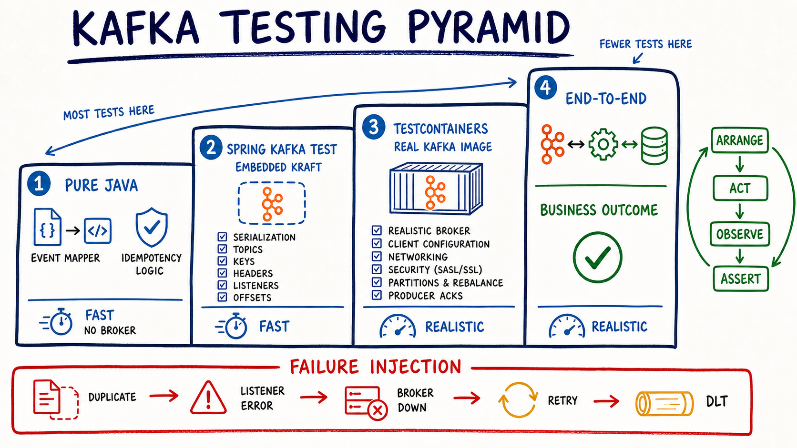

Fast logic
Mapper, key, event ID và idempotency được test không broker.
Đi từ logic Java không broker đến Embedded Kafka KRaft, Testcontainers và end-to-end. Mỗi tầng có một “lời hứa” riêng; failure test biến retry, duplicate và DLT thành hành vi đã được chứng minh.
Mapper, key, event ID và idempotency được test không broker.
Serializer, topic, header và listener chạy qua broker test.
Kafka container kiểm tra cấu hình client/broker gần production.
Retry, DLT, duplicate và timeout đều có bằng chứng quan sát được.

Topic/group riêng, input rõ, state DB sạch và timeout hữu hạn.
Gửi record rồi quan sát Kafka record, listener state, offset, DLT hoặc DB.
Ưu tiên kết quả durable và contract; không khóa test vào log/timing nội bộ.
verify(kafkaTemplate).send(...) chỉ chứng minh code gọi mock. Nó không chứng minh serializer chạy, topic tồn tại, broker ack, partition/key đúng hay listener nhận được record.Bấm vào điều bạn muốn chứng minh. Dùng tầng thấp nhất quan sát được hành vi đó.
Gọi trực tiếp mapper/service; fake repository hoặc in-memory set cho dedup.
Chạy nhanh và chỉ phụ thuộc logic bạn sở hữu.
Với group mới chưa có committed offset, thời điểm consumer start và auto.offset.reset quyết định có đọc record cũ hay không.
Consumer mới sẽ bắt đầu ở đầu log hay cuối log?
auto.offset.reset=earliest trong consumer props. Dù vậy, hãy hiểu lý do và dùng topic/group riêng để tránh test phụ thuộc lịch sử.Giả sử policy có tối đa 3 delivery attempts. Kéo số lần listener chủ động throw rồi quan sát recovery hay DLT.
Handler thành công trước khi hết attempt hay record đi DLT?
Hai test chạy song song. Chọn chiến lược đặt tên rồi xem chúng có “ăn” record của nhau không.
Cùng group nghĩa là mỗi record chỉ về một consumer member; assertion nào sẽ nhận nhầm/thiếu record?
@Test
void mapsStableIdentityAndKey() {
Order order = new Order(ORDER_ID, new BigDecimal("120.00"));
OrderPlaced event = mapper.toEvent(EVENT_ID, order);
assertThat(event.eventId()).isEqualTo(EVENT_ID);
assertThat(event.orderId().toString()).isEqualTo(ORDER_ID.toString());
// TODO: assert type, money và key mapping
}@Test
void duplicateEventCreatesOneEffect() {
InMemoryProcessedEvents processed = new InMemoryProcessedEvents();
InMemoryShipments shipments = new InMemoryShipments();
ProjectionService service = new ProjectionService(processed, shipments);
service.apply(event);
service.apply(event);
assertThat(processed.size()).isEqualTo(1);
assertThat(shipments.size()).isEqualTo(1);
}@Test
void publishesMappedRecord() {
service.handle(command);
verify(publisher).publish(argThat(record ->
record.key().equals(ORDER_ID.toString())));
}
// Không đặt tên test là kafkaAcceptsTheRecord().Nhóm này không mở broker, không dùng sleep, không dựa vào thread scheduling. Đây nên là phần lớn suite.
<dependency>
<groupId>org.springframework.boot</groupId>
<artifactId>spring-boot-starter-kafka-test</artifactId>
<scope>test</scope>
</dependency>Ở Spring Kafka hiện tại, embedded broker dùng KRaft; không thiết kế test mới quanh ZooKeeper.
@SpringBootTest
@DirtiesContext
@EmbeddedKafka(
partitions = 3,
topics = "orders.in.it",
bootstrapServersProperty = "spring.kafka.bootstrap-servers"
)
class OrderListenerEmbeddedIT {
@Autowired KafkaTemplate<String, OrderPlaced> template;
@Autowired ShipmentRepository shipments;
}@Test
void createsShipmentFromKafkaRecord() {
OrderPlaced event = fixture("evt-101", "order-42");
template.send("orders.in.it", "order-42", event).join();
// TODO: poll có timeout hữu hạn cho tới khi shipment tồn tại
assertThat(shipments.findByOrderId("order-42")).isPresent();
}join() chỉ đợi producer result. Assertion cuối vẫn phải đợi listener bất đồng bộ bằng polling/latch có deadline—không dùng Thread.sleep(5000).
ConsumerRecord<String, OrderPlaced> record =
KafkaTestUtils.getSingleRecord(testConsumer, "orders.out.it");
assertThat(record.key()).isEqualTo("order-42");
assertThat(record.value().eventId()).isEqualTo("evt-101");
// TODO: assert topic, header, payload và partition invariantSpring Kafka khuyến nghị dùng topic khác nhau cho từng test khi có thể. Tạo tên bằng test class/method hoặc UUID; group cũng phải phản ánh mục đích test.
<dependency>
<groupId>org.springframework.boot</groupId>
<artifactId>spring-boot-testcontainers</artifactId>
<scope>test</scope>
</dependency>
<dependency>
<groupId>org.testcontainers</groupId>
<artifactId>testcontainers-kafka</artifactId>
<scope>test</scope>
</dependency>Dùng BOM/dependency management của project và pin Kafka image đã kiểm tra trong CI.
@Testcontainers
@SpringBootTest
class OrderFlowContainerIT {
@Container
@ServiceConnection
static KafkaContainer kafka = new KafkaContainer(
"apache/kafka-native:3.8.0");
// TODO: send input, await DB effect, assert event identity
}@ServiceConnection tạo Kafka connection details và ưu tiên hơn connection properties. Class cũ org.testcontainers.containers.KafkaContainer đã deprecated; dùng org.testcontainers.kafka.KafkaContainer.
Khi cần Kafka distribution/image thật, listeners/networking, config broker/client, hoặc cùng lúc khởi động PostgreSQL + Kafka để kiểm tra outbox/idempotent flow.
Container startup và Docker tăng chi phí. Giữ suite nhỏ, reuse hợp lý và chạy một nhóm smoke integration test trong CI.
AtomicInteger calls = new AtomicInteger();
doAnswer(invocation -> {
if (calls.incrementAndGet() <= 2) throw new TransientException();
return null;
}).when(handler).apply(any());
// TODO: assert calls=3, effect=1, DLT=0Gửi một record có event ID cố định; chờ record ở DLT với timeout. Assert số attempts theo policy, business effect = 0 và diagnostic context còn đủ.
Gửi hai records cùng event ID. Assert consumer nhận hai deliveries nhưng processed_event = 1 và business effect = 1.
Gửi bytes không deserialize được. Kiểm tra error handler/deserialization strategy đưa record đến recovery path; đừng chỉ assert listener không được gọi.
Test producer timeout/fail-fast và readiness behavior ở nhóm container/infra test. Đặt timeout ngắn riêng cho test; không để suite treo theo production timeout.
Khởi động thêm consumer cùng group, gửi keys khác nhau và assert per-key ordering cùng exactly-one group delivery—không assert thread name hay member assignment cố định.
| Claim | Tầng | Act | Observe/assert |
|---|---|---|---|
| Event mapping đúng | Pure Java | Gọi mapper | ID, type, aggregate key, payload |
| Producer contract đúng | Embedded/Testcontainers | Send command/event | Topic, key, headers, serialized value |
| Consumer happy path | Embedded + DB test | Produce input | Business row/effect = 1 |
| Transient retry | Embedded | Fail N lần | Attempts N+1, effect 1, DLT 0 |
| Exhausted retry | Embedded | Always fail | Effect 0, DLT 1, context đủ |
| Duplicate safety | DB + Kafka integration | Same event ID ×2 | Marker 1, effect 1 |
| Real broker configuration | Testcontainers | Boot image pinned | Client connects, send/receive, config expected |
| Business journey | End-to-end | Public API/request | Durable user-visible outcome |
Poll condition với deadline và diagnostic message.
Assert state/record/offset/DLT; log chỉ hỗ trợ debug.
Unique topic/group/event ID và cleanup DB fixture.
Giải thích một Kafka flow sẽ được test ở bốn tầng nào và mỗi tầng chứng minh điều gì.
@ServiceConnection, connection details và Kafka container support.